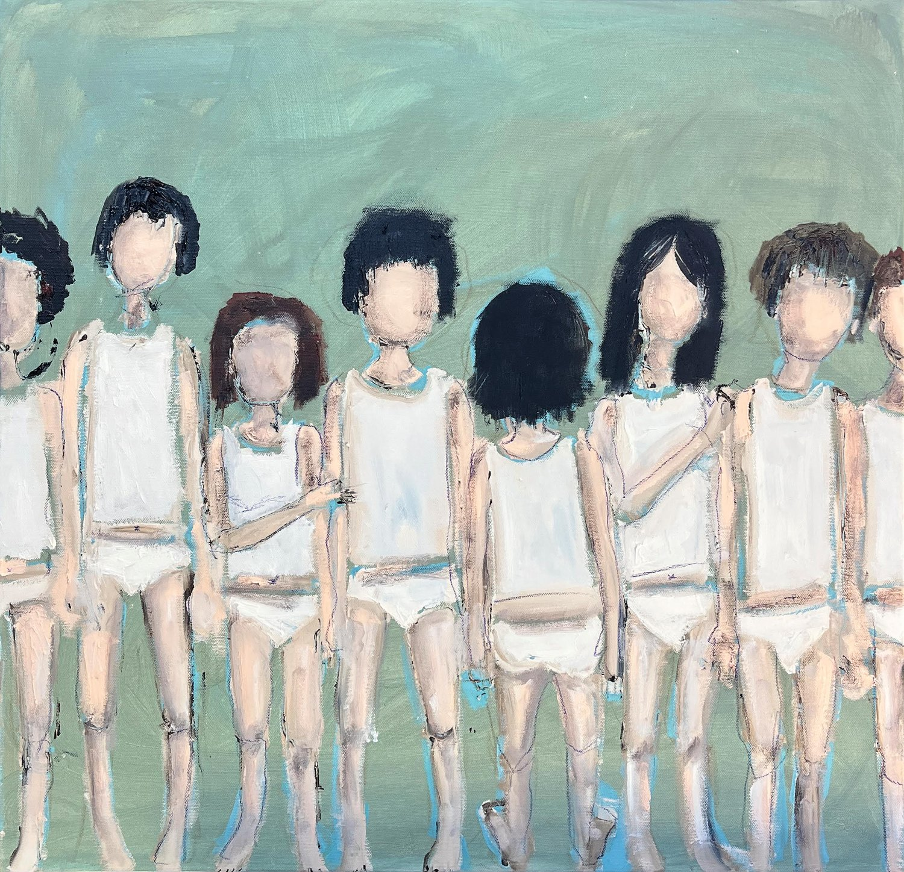

לא אתר מסחרי, לא תיק עבודות, לא דף נחיתה. בית שקט שהקוראים חוזרים אליו אחרי הקריאה — מקום שמזמין להישאר עם העולם הרגשי שהספר פותח.
המקום הזה לא בא לשכנע לקנות ספר. הוא בא להזמין לשהות.
נגזר מצבעי הכריכה — ירוקים עמומים, כחולים רכים, טורקיז מאופק. אך האתר נשאר רגוע כמעט לחלוטין.
הצבע מופיע בעיקר כקישורים, כפתורים, קווי הפרדה והדגשות קטנות — לא כרקעים גדולים.
עברית קודמת. נוחות הקריאה חשובה מהדרמה. עריכתי, ספרותי, מסה — לא טיפוגרפיה של סטארטאפ.
ילדיי רצים לפניי. הדרך מאובקת, רגליהם יחפות, ומאחורי הסיבוב תתגלה לעינינו שלולית הבוץ הגדולה.
ניווט, תוויות, טקסט שירות ופסקאות קצרות. גופן הומניסטי, נעים, נטול קישוטיות — נשען לאחור ומאפשר לתוכן לדבר.
העיצוב נושם. שוליים גדולים, חללים לבנים נדיבים, מעט אלמנטים. כל מקטע מרגיש מכוון.
פרוזה רצה ב־60 עד 68 תווים לשורה. גובה שורה רחב — בין 1.9 ל־2.1 — מאט את קצב הקריאה ומשאיר אוויר בין השורות. הטקסט אף פעם אינו פורש על מלוא רוחב המסך.
שכבת היסוד היציבה — נשארת קבועה לאורך שנים.
תיעודי ואינטימי. אור טבעי, נוכחות אנושית, רגעים שקטים, זיכרון, נוף, ילדוּת. שום דבר מלוטש או מלאכותי.

הניווט כמו מעבר בין חדרים בבית שקט. הזמנה לחקור, בלי לחץ.
טקסט עם קישור פנימי שזורם בתוך המשפט, וקישור פעולה ← בקצה.
ילדות מופלאה ואיומה כאחד.
המבקר צריך להרגיש "אני רוצה להישאר כאן" — לא "ראיתי הכול".
לא לחקות — אלא לתפוס את אותן תכונות: עריכתי, רגוע, על־זמני, מאופק, יפה בלי לנסות להרשים.
מקום שבו קריאה הופכת להתבוננות, התבוננות לשיחה, ושיחה לתחושת שייכות.